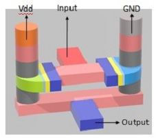

Partner Content
The growing importance of innovative MEMS microphones
06.08.2020
Advanced electron microscope imaging technology for unveiling VCSEL fabrication process details
29.07.2020

The Concept of a New Transistor FanFET Technology Applied to 3D-NAND Flash
09.07.2020